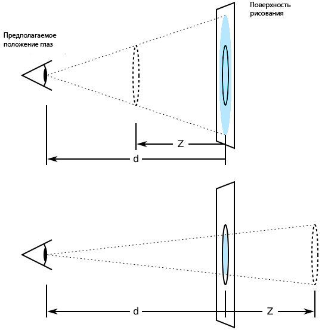
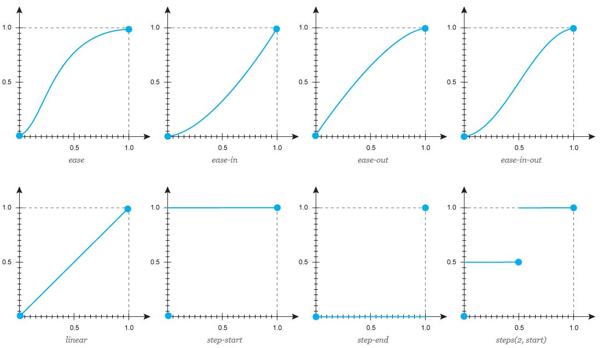

Анимации с помощью CSS
Свойство «transform»
«Transform» трансформирует элемент, в частности, позволяет его масштабировать, вращать, сдвигать, наклонять, а также комбинировать виды трансформаций:
transform: function(arg)
кроме того существует такие свойства трансформации:
-
transform-origin: coordinates – устанавливает координаты точки, относительно которой будет происходить трансформация элемента
-
transform-style: flat/preserve-3d – определяет, как дочерние элементы должны отображаться в 3D-пространстве. «flat» – дочерние элементы лежат в той же плоскости, что и их родитель, «preserve-3d» – дочерние элементы будут отображаться в 3D-пространстве.
Функции трансформации
transform: rotate(угол) – поворот элемента на заданный угол относительно точки трансформации, задаваемой свойством «ransform-origin».
transform: scale(s/(sx, sy)) – масштаб элемента по горизонтали и вертикали (значение больше 1 увеличивает масштаб элемента, меньше 1 — уменьшает масштаб).
transform: scaleX(sx) – масштабирует элемент по горизонтали.
transform: scaleY(sy) – масштабирует элемент по вертикали.
transform: skewX(угол) – наклоняет элемент на заданный угол по вертикали.
transform: skewY(угол) –наклоняет элемент на заданный угол по горизонтали.
transform: translate(tx, ty) – сдвигает элемент на заданное значение по горизонтали и вертикали.
transform: translateX(tx) – сдвигает элемент по горизонтали на указанное значение. Положительное значение сдвигает вправо, отрицательное влево.
transform: translateY(ty) – сдвигает элемент по вертикали на указанное значение. Положительное значение сдвигает вниз, отрицательное вверх.
Свойство «perspective»
В нормальном потоке элементы отображаются плоскими и в той же плоскости, что и блок, содержащий их. Двумерные функции преобразования могут изменять внешний вид элемента, но этот элемент по-прежнему отображается в той же плоскости, что и содержащий его блок.
Свойства «perspective» и «perspective-origin» можно использовать для добавления ощущения глубины в сцену, делая элементы выше по оси Z (ближе к зрителю) и кажущимися большими, а те, которые находятся дальше — меньшими. Масштаб пропорционален d/(d - Z), где d — значение перспективы, является расстоянием от плоскости рисования до предполагаемого положения глаза зрителя.

Если 3D-перспектива задается с помощью функции «perspective()», 3D-пространство активизируется только для одного элемента. Свойство «perspective» активирует 3D-пространство внутри элемента, содержащего дочерние трансформированные элементы и применяется к ним.
Обычно предполагаемое положение глаза зрителя находится в центре рисунка. Свойство «perspective-origin» управляет точкой начала координат, позволяя изменять направление трансформации дочернего 3D-элемента. Свойство должно использоваться вместе со свойством «perspective» для родительского элемента и свойством «transform» для дочернего элемента.
Свойство «transition»
Свойство «Transition» позволяет определять переходное состояние между двумя состояниями элемента. Различные состояния могут быть определены с помощью псевдоклассов, или установлены динамически с помощью JavaScript. Существуют такие типы свойства «transition»:
transition-property: all / none / свойство – устанавливает имя стилевого свойства, значение которого будет отслеживаться для создания эффекта перехода («all» – все свойства будут отслеживаться, «none» – никакое свойство не задано, «свойство» – название стилевого свойства, регистр при его написании не учитывается. При указании нескольких свойств они перечисляются друг за другом через запятую).
transition-duration: время – задаёт время в секундах или миллисекундах, сколько должна длиться анимация перехода до её завершения. По умолчанию значение равно 0s, это означает, что никакой анимации нет, переход происходит мгновенно. Можно указать несколько значений, перечисляя их через запятую. Каждое значение применяется к свойствам, заданным через «transition-property».
transition-delay: время – устанавливает время ожидания перед запуском эффекта перехода. Значение 0s или 0ms запускает анимацию сразу же. Отрицательное значение также включает анимацию без задержек, но может привести к изменению вида начала анимации. Допустимо указывать несколько значений, перечисляя их через запятую. Каждое значение будет применяться к свойству, заданному в параметрах transition-property.
transition-timing-function: ease /ease-in /ease-out /ease-in-out /linear /step-start /step-end /steps /cubic-bezier – устанавливает, насколько быстро должно изменяться значение стилевого свойство для которого применяется эффект перехода. Где значения свойств:
-
«ease» – анимация начинается медленно, затем ускоряется и к концу движения опять замедляется.
-
«ease-in» – анимация медленно начинается, к концу ускоряется
-
«ease-out» – анимация начинается быстро, к концу замедляется
-
«ease-in-out» – анимация начинается и заканчивается медленно
-
«linear» – одинаковая скорость от начала и до конца
-
«step-start» – как таковой анимации нет. Стилевые свойства сразу же принимают конечное значение
-
«step-end» – как таковой анимации нет. Стилевые свойства находятся в начальном значении заданное время, затем сразу же принимают конечное значение
-
«steps» – ступенчатая функция, имеющая заданное число шагов. transition-timing-function: steps(число, start / end). Здесь: «число» — целое число больше нуля, «start» — задаёт полунепрерывную снизу функцию, «end» — задаёт полунепрерывную сверху функцию
-
«cubic-bezier» – задаёт функцию движения в виде кривой Безье.

Свойство «animation»
«CSS-анимация» придаёт сайтам динамичность. Она оживляет веб-страницы, улучшая взаимодействие с пользователем. В отличие от «CSS-переходов», создание анимации базируется на ключевых кадрах, которые позволяют автоматически воспроизводить и повторять эффекты на протяжении заданного времени, а также останавливать анимацию внутри цикла. При создании анимации не стоит забывать о возможных проблемах с производительностью, так как на изменение некоторых свойств требуется много ресурсов.
Для создания «CSS-анимация» необходимы следующие действия:
-
Создание ключевых кадров. Ключевые кадры используются для указания значений свойств анимации в различных точках анимации. Ключевые кадры определяют поведение одного цикла анимации; анимация может повторяться ноль или более раз. Ключевые кадры указываются с помощью правила @keyframes, определяемого следующим образом:
@keyframes имя анимации { список правил }
Здесь определяется какие свойства на каком шаге будут анимированы. Каждый кадр может включать один или более блоков объявления из одного или более пар свойств и значений. Правило @keyframes содержит имя анимации элемента, которое связывает правило и блок объявления элемента. Ключевые кадры создаются с помощью ключевых слов from и to (эквивалентны значениям 0% и 100%) или с помощью процентных пунктов, которых можно задавать сколько угодно. Также можно комбинировать ключевые слова и процентные пункты:
@keyframes shadow {from {свойства} 50% {свойства} to {свойства}
-
После объявления правила @keyframes, необходимо сосслаться на него в свойстве «animation»:
selector {
animation: shadow 2s infinite ease-in-out;
}
Типы «animation»
«animation-name» определяет список применяемых к элементу анимаций. Каждое имя используется для выбора ключевого кадра в правиле, которое предоставляет значения свойств для анимации.
«animation-duration» определяет продолжительность одного цикла анимации. Задаётся в секундах s или миллисекундах ms. Если для элемента задано более одной анимации, то можно установить разное время для каждой, перечислив значения через запятую.
«animation-timing-function» описывает, как будет развиваться анимация между каждой парой ключевых кадров. Во время задержки анимации временные функции не применяются:
animation-timing-function: ease /ease-in /ease-out /ease-in-out /linear /step-start /step-end /steps /cubic-bezier
«animation-iteration-count» указывает, сколько раз проигрывается цикл анимации. Начальное значение 1 означает, что анимация будет воспроизводиться от начала до конца один раз:
animation-iteration-count: число / infinite
Это свойство часто используется в сочетании со значением «alternate» свойства «animation-direction», которое заставляет анимацию воспроизводиться в обратном порядке в альтернативных циклах.
«animation-direction» определяет, должна ли анимация воспроизводиться в обратном порядке в некоторых или во всех циклах. Когда анимация воспроизводится в обратном порядке, временные функции также меняются местами:
animation-direction: normal (все повторы анимации воспроизводятся так, как указано, значение по умолчанию)/ reverse (все повторы анимации воспроизводятся в обратном направлении от того, как они были определены)/ alternate (каждый нечетный повтор цикла анимации воспроизводятся в нормальном направлении, каждый четный повтор воспроизводится в обратном направлении)/ alternate-reverse (каждый нечетный повтор цикла анимации воспроизводятся в обратном направлении, каждый четный повтор воспроизводится в нормальном направлении)
«animation-play-state» определяет, будет ли анимация запущена или приостановлена:
animation-play-state: running /paused
«animation-delay» определяет, когда анимация начнется. Задается в секундах s или миллисекундах ms.
«animation-fill-mode» определяет, какие стили должны применяться к элементу, когда анимация не проигрывается. Например, после её завершения или при остановке. По умолчанию, в момент окончания анимации стиль элемента возвращается к исходному, свойство «animation-fill-mode» позволяет изменить это поведение и сделать так, чтобы стиль элемента оставался как у последнего ключевого кадра.
animation-fill-mode: none (к элементу не применяются какие-либо стили)/ forwards (к элементу по окончанию анимации применяется стиль последнего ключевого кадра)/ backwards (к элементу применяется стиль первого ключевого кадра и он остаётся на протяжении периода заданного animation-delay)/ both (к элементу применяются оба правила, как для forwards, так и для backwards)